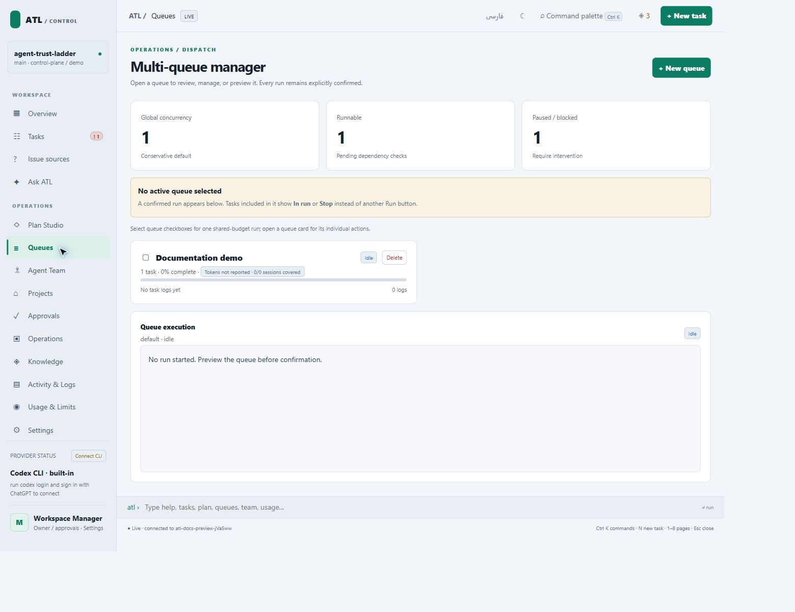

Tasks and queues
A task defines a bounded outcome and acceptance evidence. A queue chooses the work considered by a bounded run. Order does not remove prerequisite or approval gates.
Create a task contract
- Open Tasks and create or import work.
- Define an objective and observable completion checks.
- Set priority and risk, attach resources, and identify prerequisites.
- Review the route, worker readiness, and required approval.
- Resolve incomplete contracts before execution.
A useful check names behavior and a verifier: “Submitting an empty email displays validation and sends no request; run the form regression test.” “Fix the page” does not define acceptance.
Build a queue
Open Queues, create/select a named queue, add reviewed tasks, and inspect its policy and dependencies. Queue membership persists independently of browser selection.

atl queue list
atl queue add T-001
atl queue remove T-001
atl launch --dry-run
Use your actual task IDs. The top-level CLI exposes add/remove/list/clear. Named-queue commands belong to the browser or terminal command console; see the console reference.
For example, enter these inside the console, without an atl prefix:
queue create nightly --name "Nightly verification"
queue use nightly
queue add T-001
queue inspect nightly
queue dry-run nightly
Read the lifecycle
flowchart LR accTitle: Conceptual task lifecycle accDescr: Drafting, specification, prerequisites, implementation, independent review, verification, and delivery with bounded repair. A[Draft or import] --> B[Specify and check] B --> C[Resolve prerequisites] C --> D[Implement] D --> E[Independent review] E --> F[Verify] F --> G[Delivery decision] D --> H[Block or repair] H --> C
This conceptual workflow is not the literal status enumeration. Exact values and actor permissions live in config/manager-state-contract.json; see resource model.
Diagnose readiness
Use atl why T-001, atl show T-001, and task evidence/relationships. Missing handoffs, failed checks, unavailable providers, and incomplete approvals must remain visible. See overnight runs, queue recovery, and change review.
Source: runtime/lib/state.mjs, queue.mjs, launch.mjs, dispatcher.mjs. Checks: verification/task_dependency_contract_test.mjs, supervisor_runner_test.mjs, overnight_issue_e2e_test.mjs.